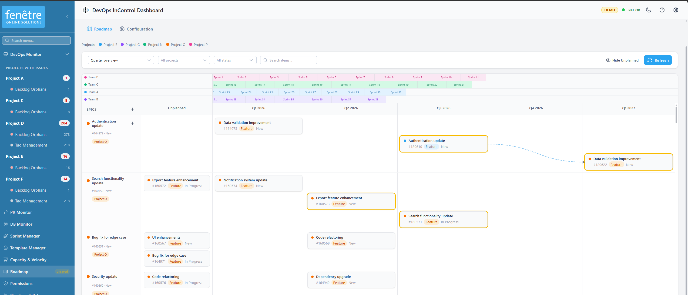
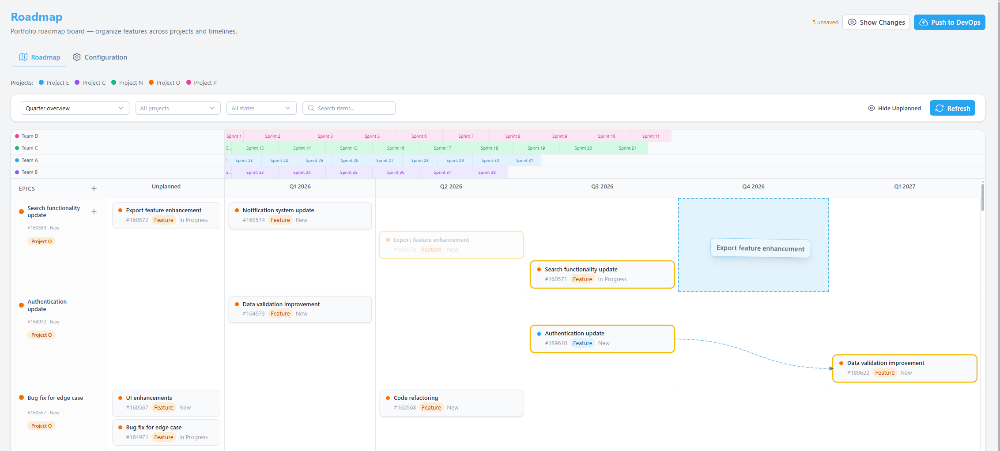
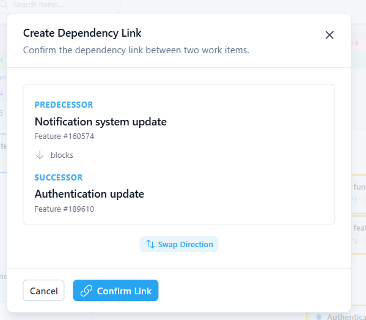
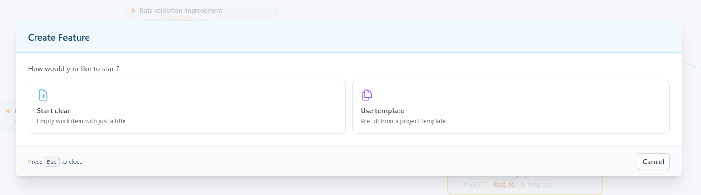
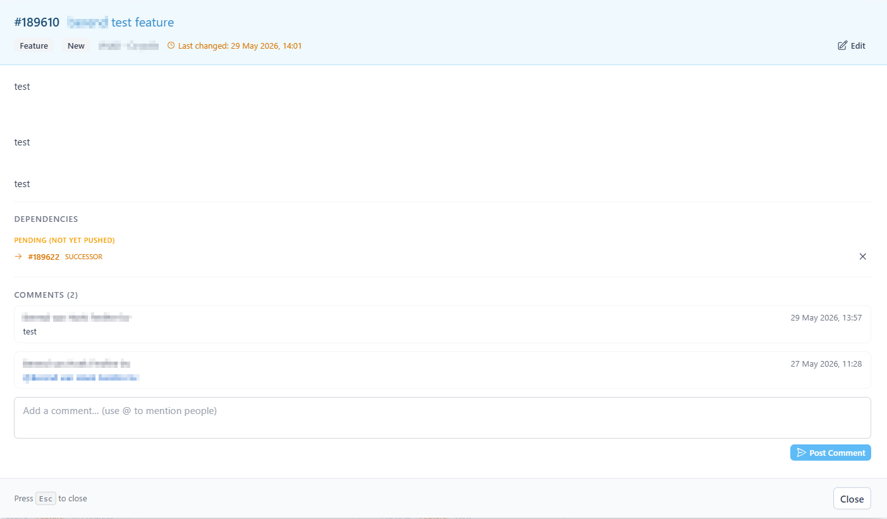
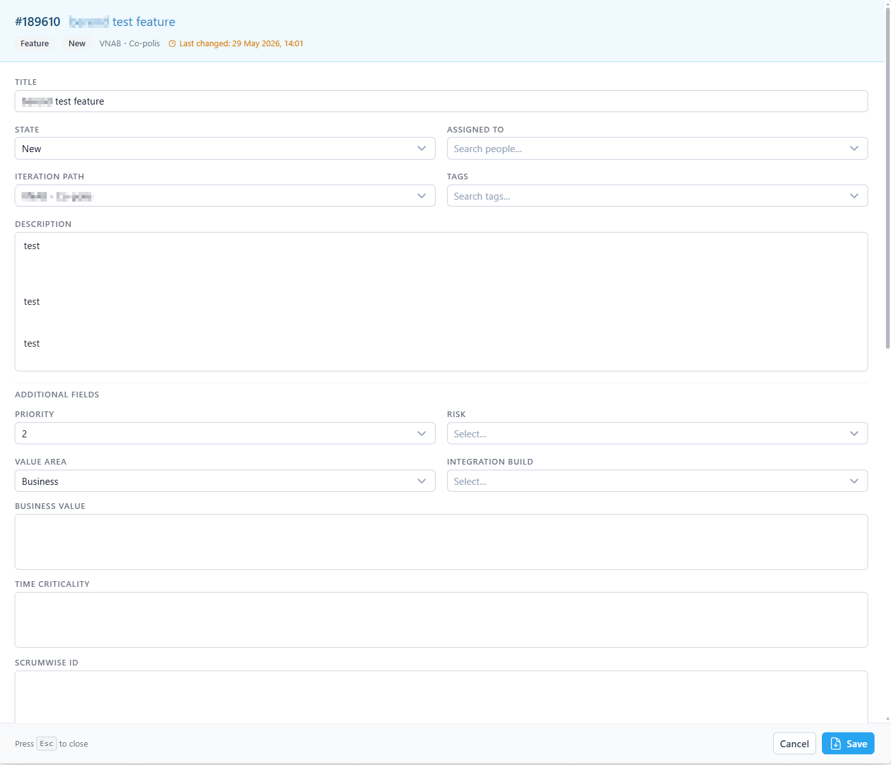
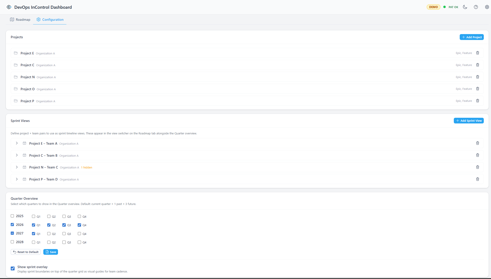

Roadmap
The Roadmap provides a portfolio-level timeline view of your Epics and Features across multiple Azure DevOps projects and teams. Plan work visually, reschedule by dragging, create dependency links, and push changes back to Azure DevOps when ready.

The Roadmap board in Quarter view with sprint overlay enabled.
Getting Started with the Roadmap
- Open the Roadmap from the sidebar menu.
- Switch to the Configuration tab.
- Add one or more Azure DevOps projects and select which work item types to display (typically Epic and Feature).
- Optionally add Sprint Views (project + team pairs) to enable the Sprint view mode.
- Return to the Roadmap tab — your items appear on the timeline.
View Modes
Quarter Overview (Default)
Displays a timeline divided into calendar quarters (e.g. "2025 Q1", "2025 Q2"). Best for high-level planning spanning multiple months. You can toggle a Sprint Overlay that shows sprint boundaries as thin coloured bands for each configured team.
Sprint View
Displays a timeline divided by sprint boundaries for a specific team. Use the view mode selector in the filter bar to switch between Quarter view and individual team sprint views. Individual sprints can be hidden in the Configuration tab.
Board Layout
- Timeline Header — Shows quarter labels (or sprint dates). In Sprint view, month headers appear above.
- Epic Rows — One row per Epic. Each row shows all child Features as horizontal bars positioned on the timeline.
- Feature Bars — Positioned based on start/target date. Colour-coded by project. Shows title, ID, state, and type badge.
- Unparented Row — Features without a parent Epic are grouped in a "No Parent Epic" row at the bottom.
- Unplanned Column — Features without dates appear as stacked cards (not bars) in the right-most column.
Drag-to-Reschedule
Reschedule Features by dragging them to a different timeline column:
- Grab a Feature bar and drag it to the target quarter or sprint column.
- The bar repositions and gains an amber ring to indicate an unsaved change.
- Use the resize handles (left/right edges of the bar, visible on hover) to fine-tune start and target dates.
- The unsaved changes counter at the top updates. Changes are staged locally.
- Click Push to DevOps when ready to write all date changes back to Azure DevOps.

Drag a feature bar to reschedule it. The amber ring indicates an unsaved change.
Dependency Linking
Create predecessor/successor relationships between Features directly on the board:
- Hover over a Feature bar and click the chain icon (🔗). A "linking from…" banner appears.
- Click the chain icon on the target Feature.
- A confirmation modal shows both items with a directional arrow. Use Swap Direction to reverse the relationship if needed.
- Confirm to create the link. It appears as an SVG arrow between the bars.
- Pending links show as dashed arrows until pushed to Azure DevOps.
To remove a link, hover over the arrow and click the ✕ icon at the midpoint. The removal is staged until you push.

Dependency arrows between features with the link confirmation modal.
Creating New Items
Add new Epics or Features directly from the Roadmap board:
- Hover over an Epic row's label and click the + Create Feature button that appears, or use the Add Epic button in the timeline header.
- Choose whether to start from a clean form or use an existing work item template.
- Fill in the title, description (with @mention and image paste support), iteration path, and any custom fields.
- Click Create — the item appears on the board immediately.
The create modal features:
- A coloured header bar showing "Create [type]".
- The Iteration Path field pre-selects the team's default iteration (backlog iteration from Azure DevOps team settings). All iterations are available in the dropdown, sorted newest-first.
- Custom fields with type
html,plaintext, orstringrender as full-width rich text editors with @mention and image paste support. - Custom fields with allowed values render as dropdown selectors in a side-by-side grid.
- System-managed fields (state change date, activated date, resolved date, etc.) are hidden from the form.
- Footer shows "Press Esc to close" on the left and action buttons on the right.

The create modal with iteration pre-selected and custom fields.
Detail Modal
Click any Feature bar or Epic label to open the detail modal. The modal has a coloured header bar showing the work item ID, title, type badge, state badge, assigned person, iteration path, tags, and last changed date (in orange).

The detail modal in view mode with coloured header bar.
View Mode
By default the modal opens in read-only view showing the work item description, dependency links, and comments. Click Edit in the header to switch to edit mode.
Edit Mode
In edit mode you can change:
- Title, State, Assigned To, Iteration Path
- Tags (multi-select)
- Description (rich editor with @mentions and image paste)
- Custom fields (rich text or dropdowns, based on field type)
- Dependencies (add/remove predecessor/successor links)
Comments can be added from both view and edit mode using the comment box at the bottom (supports @mentions and image paste).

The detail modal in edit mode with editable fields and custom field editors.
Modal Footer
The footer shows "Press Esc to close" on the left. In edit mode, Cancel and Save buttons appear on the right. In view mode, a Close button is shown.
Filtering & Search
| Filter | Description |
|---|---|
| View mode | Switch between Quarter and Sprint views. |
| Project filter | Multi-select to show only items from specific projects. |
| State filter | Multi-select to show only items in specific states (e.g. New, Active, Closed). |
| Search | Real-time filter by title or work item ID. |
| Show unplanned | Toggle to show/hide items without dates. |
Configuration Tab
Projects
Add Azure DevOps projects to the Roadmap. For each project, select which work item types to display (typically Epic and Feature). Items of these types are fetched and shown on the board.
Sprint Views
Define project + team pairs to enable Sprint view mode. Once added, that team's sprints appear as a selectable view in the filter bar. Expand a sprint view entry to hide specific sprints from the timeline.
Quarters
Select which calendar quarters to show in Quarter view. By default, the current quarter plus 1 past and 3 future are displayed. Toggle Sprint Overlay to show sprint boundaries on the Quarter view.

The Configuration tab with projects and sprint views.
Pushing Changes to Azure DevOps
All date changes and dependency links are staged locally until you explicitly push them:
- The header shows a badge with the number of unsaved changes.
- Click Show Changes to review: date shifts, link additions, and link removals.
- Revert individual items if needed.
- Click Push to DevOps to write all changes to Azure DevOps in one batch.